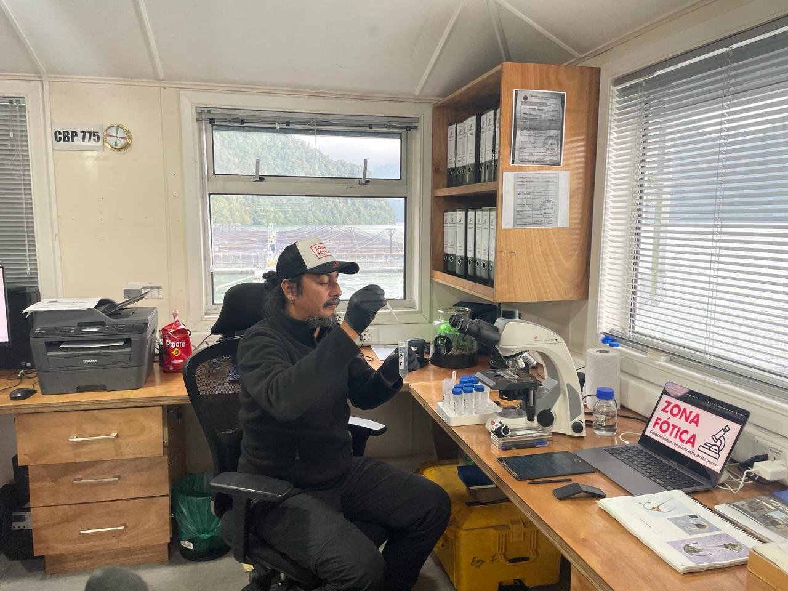
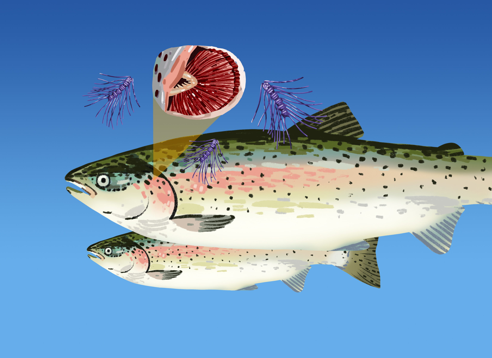

Visión

Nuestra visión en Zona Fótica es forjar un camino donde la coexistencia armoniosa entre la acuicultura y el ambiente sea el rumbo. Buscamos ser reconocidos globalmente como líderes en la gestión responsable de centros de engorda, impulsando prácticas innovadoras y sostenibles que beneficien tanto a la industria como a la biodiversidad marina, asegurando un legado positivo para las generaciones futuras.
Misión
En Zona Fótica, nos comprometemos a liderar la protección de los organismos hidrobiológicos en centros de engorda a través de servicios especializados de identificación y cuantificación de microalgas nocivas. Buscamos no solo brindar soluciones precisas y eficientes, sino también promover la sostenibilidad ambiental, velando por el bienestar animal y el equilibrio de los ecosistemas acuáticos.

CONTACTOS
Alejandro Retamal
Doctor en Ciencias Humanas
+56999660821
alejandro.retamal@zonafotica.cl
Carolina Velazquez-Munzenmayer
Directora Ejecutiva
+56963031855
carolina.velasquez@zonafotica.cl
Juan Jose Rodriguez-Maulen
Director Cientifico
+56942268847
juanjose.rodriguez@zonafotica.cl
Cristobal Garces
Cientifico de datos
+56971291520
cristobal.garces@zonafotica.cl
Guido Mancilla
Ingeniero Ambiental
+56950525395
guido.mancilla@zonafotica.cl